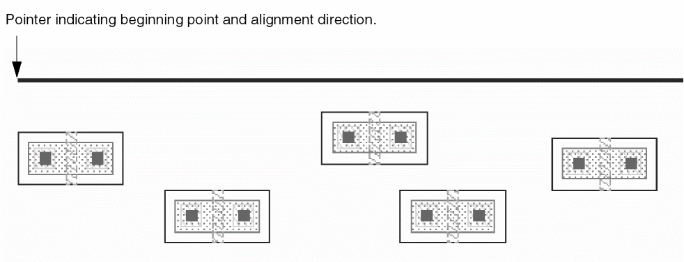
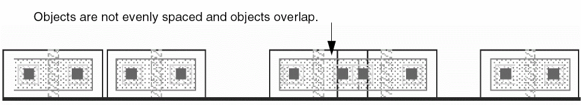
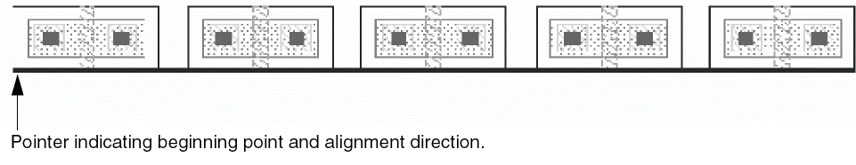
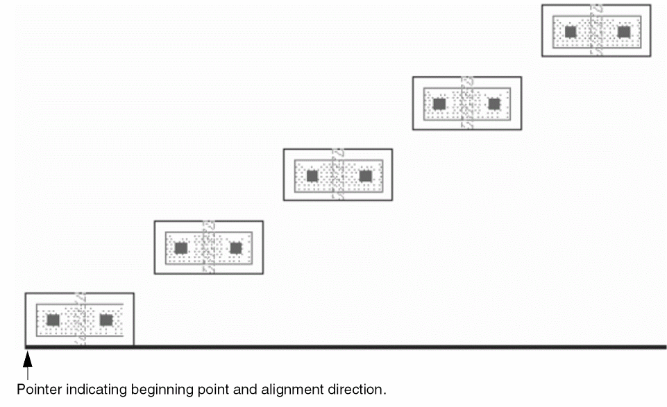

Aligning Objects with a Point
To align objects, you must always choose a reference point. The selected shapes align with the selected reference point as per the other options specified in the Align form. If you specify a spacing value for point alignment, the first object always overlaps the reference point and the spacing value is used to align the remaining objects. After alignment, all selected shapes are deselected.
To align objects with a point:
-
In the layout window, select Edit – Advanced – Align.
The Align form opens. - Choose the Align Direction in the Reference section.
-
Choose Point in the Reference section to align objects to a point.
You are prompted to point at a reference point for the alignment. -
Click the point on the canvas or enter the coordinates of the point in the CIW. After you have chosen a point and an alignment direction, a pointer line appears indicating the beginning point of the alignment and the alignment direction. The following figure shows a sample pointer line when the direction is horizontal.
You can use the Set New Reference button in the form to clear any existing reference point and specify a new reference point.
 - In the Align Using section, set the object type of objects or layer to align with the point, object, or layer selected in the Reference section. For example, you can choose Object and set the object type as Instance.
- From the Use list, select the edge of the object you want to align. For example, Lower Left.
-
To evenly space the objects in the specified direction, select the Apply Spacing check box and enter the value in user units by which you want to separate the objects. If you do not use Apply Spacing, the objects retain their original spacing. They are aligned, but not evenly spaced, as shown in the example below:
 - To space the objects perpendicular to the Align Direction as well, select the Orthogonal Spacing check box. This option is available only if Apply Spacing is selected.
- Choose Between Objects or Pitches, depending on the spacing you want. For example, you can select Between Objects with a spacing of two user units.
- From Sort Objects By, choose how you want the objects to be sorted.
-
On the canvas, select the objects to be aligned. You can select the objects by clicking each object one at a time while holding down the
Shiftkey, or you can select the objects by drawing a selection box around them. -
Click Apply.
The following figure shows an example when the reference point is -157:-12 and the Align Direction is Horizontal. The Align Using is Object and Instance, the Use list is set to Lower Left, Apply Spacing is set to2.0user units Between Objects, and the objects are sorted by Instance Name.
If Orthogonal Spacing is also selected and set to 2.0 user units, objects are aligned along the Y-axis as well.

Related Topics
Object Alignment by Using the Align Command
Return to top